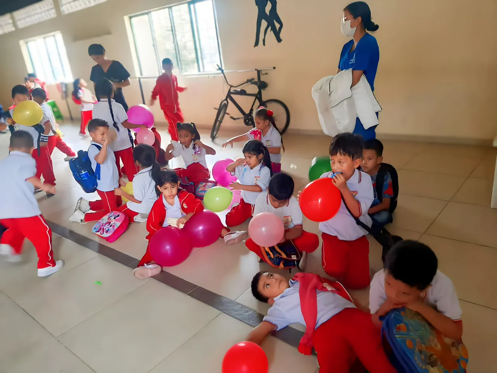

Programas Académicos
Ofrecemos una formación integral que combina excelencia académica, orientación en salud, y una educación inclusiva con enfoque en valores, preparando a nuestros estudiantes para enfrentar con liderazgo y compromiso los retos del mundo actual.

Conoce Nuestros Programas Académicos
En la Institución Educativa Técnica en Salud y Valores Francisco de Paula Santander de Popayán, ofrecemos una educación de calidad centrada en el desarrollo académico, ético y social de nuestros estudiantes. Nuestro enfoque combina formación básica, técnica y humana, preparando a los jóvenes para enfrentar con éxito su futuro personal y profesional.
Modalidad Técnica en Salud
La Modalidad Técnica en Salud representa una de las fortalezas institucionales más significativas. A partir del grado 10°, los estudiantes pueden acceder a una formación articulada con el SENA, que les permite adquirir competencias en promoción de la salud, prevención de enfermedades, primeros auxilios y gestión de actividades comunitarias en entornos reales.
Este programa no solo proporciona herramientas técnicas y vocacionales, sino que también fomenta el liderazgo, el compromiso social y el pensamiento crítico. Al culminar sus estudios, los jóvenes obtienen una certificación técnica que les abre las puertas a oportunidades laborales tempranas o a continuar su formación en niveles técnicos o tecnológicos.
- Título técnico otorgado por el SENA
- Prácticas en instituciones de salud locales
- Formación con enfoque humano, ético y comunitario
- Fortalecimiento del perfil para la educación superior
Programa CRECER FELIZ
“Crecer Feliz” es una iniciativa institucional orientada a brindar acompañamiento integral a estudiantes con discapacidad cognitiva, en un entorno educativo accesible, empático y respetuoso de la diversidad. A través de este programa, se desarrollan estrategias pedagógicas flexibles que fortalecen el aprendizaje significativo, la autonomía personal, la convivencia y la inclusión social desde la educación inicial hasta la media técnica.
Este programa promueve el trabajo colaborativo entre docentes, familias y profesionales de apoyo, permitiendo adaptar el currículo a las necesidades individuales de cada estudiante. También fomenta el desarrollo de habilidades comunicativas, emocionales y funcionales que potencian el bienestar y la participación activa en la vida escolar.
- Acompañamiento durante toda la trayectoria escolar
- Enfoque afectivo, comunicativo y social
- Inclusión con apoyo docente y familiar
- Currículo flexible y adaptaciones significativas
Modalidad Técnica en Salud
La Modalidad Técnica en Salud representa una de las fortalezas institucionales más significativas. A partir del grado 10°, los estudiantes pueden acceder a una formación articulada con el SENA, que les permite adquirir competencias en promoción de la salud, prevención de enfermedades, primeros auxilios y gestión de actividades comunitarias en entornos reales.
Este programa no solo proporciona herramientas técnicas y vocacionales, sino que también fomenta el liderazgo, el compromiso social y el pensamiento crítico. Al culminar sus estudios, los jóvenes obtienen una certificación técnica que les abre las puertas a oportunidades laborales tempranas o a continuar su formación en niveles técnicos o tecnológicos.
- Título técnico otorgado por el SENA
- Prácticas en instituciones de salud locales
- Formación con enfoque humano, ético y comunitario
- Fortalecimiento del perfil para la educación superior
Programa CRECER FELIZ
“Crecer Feliz” es una iniciativa institucional orientada a brindar acompañamiento integral a estudiantes con discapacidad cognitiva, en un entorno educativo accesible, empático y respetuoso de la diversidad. A través de este programa, se desarrollan estrategias pedagógicas flexibles que fortalecen el aprendizaje significativo, la autonomía personal, la convivencia y la inclusión social desde la educación inicial hasta la media técnica.
Este programa promueve el trabajo colaborativo entre docentes, familias y profesionales de apoyo, permitiendo adaptar el currículo a las necesidades individuales de cada estudiante. También fomenta el desarrollo de habilidades comunicativas, emocionales y funcionales que potencian el bienestar y la participación activa en la vida escolar.
- Acompañamiento durante toda la trayectoria escolar
- Enfoque afectivo, comunicativo y social
- Inclusión con apoyo docente y familiar
- Currículo flexible y adaptaciones significativas
Comprometidos con la Excelencia Educativa
Más que una institución, somos una comunidad educativa que forma estudiantes íntegros, comprometidos con la salud, los valores y el servicio a la sociedad. Nuestra trayectoria, programas técnicos articulados con el SENA y enfoque inclusivo reflejan nuestro impacto positivo en Popayán.
Conoce Nuestra Historia